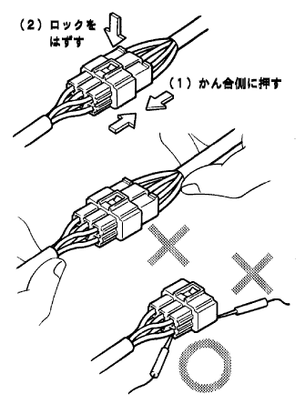
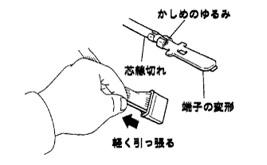
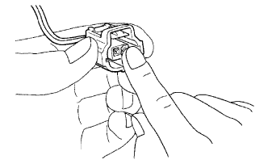
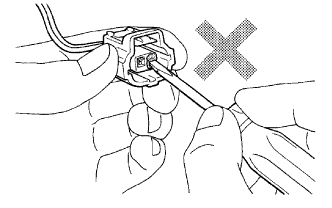
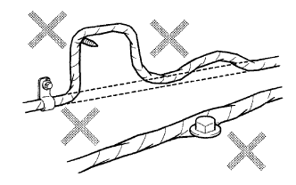

Reserve value measurement condition of electronic components
Unless otherwise specified, all resistance is measured at a peripheral temperature of 20 ° C.If the car is measured at a high surrounding temperature immediately after the car runs, the resistance value is out of the specified value, so measure after the engine cools.
|  |
Handling of connectors
When separating the locked connector, press the connector to the mechanism side, make it easier to move the lock claw, and remove the lock.
To separate the connector, hold the connector without the harness.
Before connecting the connector, make sure that there is no deformation, damage or omission of the terminal.
The connection of the connector with a lock is sure to insert it until the lock sounds.
When checking the connector with a Toyota Electrical Tester, use a mini -test lead to the back of the connector (harness side).
- ■ Attention ■
- Since the waterproof connector cannot be inspected from the back of the connector, connect the subhearness and check.
- Move the inserted tester stick unnecessarily to damage the terminal.
Connector inspection guidelines
Inspection in the connector connection state, hold the connector housing, check the degree of insertion and the effect of the lock.(Matching state)
Inspection in a connector cut state, lightly pulls the wire harness and checks.(Terminals, terminals, core wire are out of rust, or not to rust, metal pieces, water, etc.(Corrosion, foreign matter mixed, terminal deformation)
- ■ Attention ■
- When testing a gold -plated female terminal, always use the gold -plated male terminal.
Inspection of terminal contact pressure, the same terminal as the male terminal is prepared, inserted into a female terminal, and checks for the mechanism and sliding weight.
|  |
 |
 |
How to repair the connector terminal
If there is dirt in the contact, clean the contact part using an airgun or a rag.At this time, the surface of the surface will be peeled off, so never polish the contact part with sandpaper.
If the contact pressure is abnormal, replace the female terminal.At this time, a gold -plated (gold) corresponding male terminal on the part side is used, and a tin -plated female terminal for tin plating (silver) is used.
If there are no abnormalities in the contact part, clean the contact part with an airgun or the like and apply a connector grease (part number 088887-02106).(This can prevent the contact of the contact and wear.)
|  |
Toyota genuine connector grease
Grease (white) that prevents terminal corrosion is used for connectors in places where water is easy to apply, such as alternators and headlamps.
If the connector grease is insufficient or the terminal is repaired, the connector grease (part number 08887-02106,100g) is used by hand.
- ■ Attention ■
- Do not stick dust.
- Do not use tools such as drivers.
There is no problem if the grease adheres to the waterproof connector's O -ring and rubber stopcocks, but it may deteriorate and discoloration when adhered to other rubber parts (such as waterstrip and wire harness grommets).If it is attached, wipe it immediately.
|  |
|  |
Handling of wire harness
When removing the harness, check the handling and clamp status before work so that the restoration can be performed.
Turn, pull, or slack more than necessary.
It does not interfere with the harnesses, rotation portions, vibration portions, and sharp corners (panel ends, screw tips, etc.).
When installing parts, do not let the harness bite.
Do not break the harness coating.If it breaks, replace it or correct it with vinyl tape.